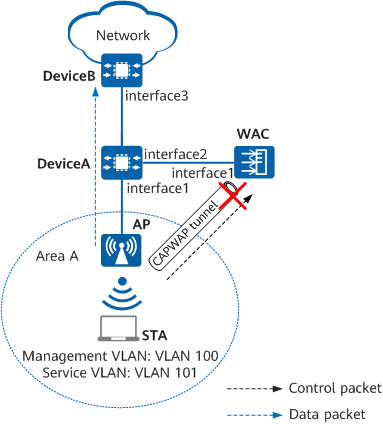

Example for Configuring AP-Offline Service Continuity
Networking Requirements
Users can access the network through WLANs, meeting the basic mobile office requirements. Furthermore, users' services are not affected during STA roaming in the coverage area.
The enterprise requires that data forwarding be still available even if the WAC is faulty to improve service data transmission reliability.
- WAC networking mode: Layer 2 off-path networking
- DHCP deployment mode: DeviceA functions as a DHCP server to assign IP addresses to APs and STAs.

In this example, interface1, interface2, and interface3 represent 10GE0/0/1, 10GE0/0/2, and 10GE0/0/3, respectively.

To complete the configuration, you need the following data:
Configuration Item |
Data |
|---|---|
Management VLANs for APs |
VLAN 100 |
Service VLAN for STAs |
VLAN 101 |
DHCP server |
DeviceA functions as a DHCP server to assign IP addresses to APs and STAs. |
IP address pool for APs |
10.1.1.3–10.1.1.254/24 |
IP address pool for STAs |
10.1.2.3–10.1.2.254/24 |
Gateway for APs |
10.1.1.1/24 |
Gateway for STAs |
10.1.2.1/24 |
IP address of the WAC's source interface |
VLANIF 100: 10.1.1.2/24 |
AP group |
|
Regulatory domain profile |
|
SSID profile |
|
Security profile |
|
VAP profile |
|
AP system profile |
|
Precautions
- No ACK mechanism is available for multicast packet transmission over unstable wireless links of air interfaces. For this reason, multicast packets are usually sent at low rates to ensure stable transmission. However, if a large number of multicast packets are sent from the network side, air interfaces may be congested. Therefore, you are advised to configure multicast packet suppression to reduce the impact of numerous low-rate multicast packets on the wireless network. Exercise caution when configuring the rate limit if there are multicast services on the network, as this may affect the multicast services.
Configure multicast packet suppression on interfaces directly connecting the device to APs.
For details on how to configure traffic suppression, see How Do I Configure Multicast Packet Suppression to Reduce Impact of a Large Number of Low-Rate Multicast Packets on the Wireless Network?
- The port isolation configuration is recommended on the ports of the device directly connected to APs. If port isolation is not configured and direct forwarding is used, a large number of unnecessary broadcast packets may be generated in the VLAN, blocking the network and degrading user experience.
- The CAPWAP source interface or source address can be successfully configured only when all of the following security-related configurations exist: PSK for DTLS encryption, user name and password for logging in to an AP, and password for logging in to the global offline management VAP. If any of these configurations does not exist, the system prompts you to supplement related configurations first.
- If DTLS encryption for CAPWAP control tunnels is enabled, APs fail to go online after being imported. In this case, run the capwap dtls no-auth enable command to enable the function of establishing CAPWAP DTLS sessions in none authentication mode so that the APs can obtain security credentials. After the APs go online, run the undo capwap dtls no-auth enable command to disable this function promptly to prevent unauthorized APs from going online.
Configuration Roadmap
- Configure network connectivity between the WAC, APs, and other network devices.
- Configure APs to go online.
- Create an AP group and add APs that require the same configuration to the group for unified configuration.
- Configure system parameters for the WAC, including the country code and WAC's source interface for communication with APs.
- Configure the AP authentication mode and import APs so that they can go online normally.
- Configure WLAN service parameters for STAs to access the WLAN.
- Configure AP-offline service continuity to improve service data transmission reliability so that data forwarding is not affected even when the WAC is faulty.
Procedure
- Configure devices to implement network connectivity.
# On DeviceA, create VLANs 100 and 101, and configure them as the management VLAN and service VLAN, respectively. Set the link type of 10GE0/0/1 connecting DeviceA to the AP to trunk and the PVID of the interface to VLAN 100, and configure the interface to allow packets from VLANs 100 and 101 to pass through. Set the link type of 10GE0/0/2 on DeviceA to trunk and configure the interface to allow packets from VLAN 100 to pass through.
<HUAWEI> system-view [HUAWEI] sysname DeviceA [DeviceA] vlan batch 100 101 [DeviceA] interface 10ge 0/0/1 [DeviceA-10GE0/0/1] portswitch [DeviceA-10GE0/0/1] port link-type trunk [DeviceA-10GE0/0/1] port trunk pvid vlan 100 [DeviceA-10GE0/0/1] port trunk allow-pass vlan 100 to 101 [DeviceA-10GE0/0/1] port-isolate enable group 1 [DeviceA-10GE0/0/1] quit [DeviceA] interface 10ge 0/0/2 [DeviceA-10GE0/0/2] portswitch [DeviceA-10GE0/0/2] port link-type trunk [DeviceA-10GE0/0/2] port trunk allow-pass vlan 100 [DeviceA-10GE0/0/2] quit
# On DeviceB, add 10GE0/0/3 to VLAN 101, create VLANIF 101, and configure the IP address 10.1.2.2/24 for VLANIF 101.<HUAWEI> system-view [HUAWEI] sysname DeviceB [DeviceB] vlan batch 101 [DeviceB] interface 10ge 0/0/3 [DeviceB-10GE0/0/3] portswitch [DeviceB-10GE0/0/3] port link-type trunk [DeviceB-10GE0/0/3] port trunk allow-pass vlan 101 [DeviceB-10GE0/0/3] quit [DeviceB] interface vlanif 101 [DeviceB-Vlanif101] ip address 10.1.2.2 24 [DeviceB-Vlanif101] quit
# Add 10GE0/0/1 connecting the WAC to DeviceA to VLAN 100, and configure the IP address 10.1.1.2/24 for VLANIF 100.
<HUAWEI> system-view [HUAWEI] sysname WAC [WAC] vlan batch 100 [WAC] interface 10ge 0/0/1 [WAC-10GE0/0/1] portswitch [WAC-10GE0/0/1] port link-type trunk [WAC-10GE0/0/1] port trunk allow-pass vlan 100 [WAC-10GE0/0/1] quit [WAC] interface vlanif 100 [WAC-Vlanif100] ip address 10.1.1.2 24 [WAC-Vlanif100] quit
- Configure the DHCP server to assign IP addresses to the APs and STAs.
Configure the DNS server address as required by using the following methods:
- In the interface address pool scenario, run the dhcp server dns-list ip-address &<1-8> command in the VLANIF interface view.
- In the global address pool scenario, run the dns-list ip-address &<1-8> command in the IP address pool view.
# On DeviceA, configure VLANIF 100 to use the interface address pool to assign IP addresses to APs.
[DeviceA] dhcp enable [DeviceA] interface vlanif 100 [DeviceA-Vlanif100] ip address 10.1.1.1 24 [DeviceA-Vlanif100] dhcp select interface [DeviceA-Vlanif100] dhcp server excluded-ip-address 10.1.1.2 [DeviceA-Vlanif100] quit
# On DeviceA, configure VLANIF 101 to use the interface address pool to assign IP addresses to STAs.
[DeviceA] interface vlanif 101 [DeviceA-Vlanif101] ip address 10.1.2.1 24 [DeviceA-Vlanif101] dhcp server excluded-ip-address 10.1.2.2 [DeviceA-Vlanif101] dhcp select interface [DeviceA-Vlanif101] quit
- Configure APs to go online.# Create an AP group to which APs requiring the same configuration are added.
[WAC] wlan [WAC-wlan] ap-group name ap-group1 [WAC-wlan-ap-group-ap-group1] quit
# Create a regulatory domain profile, configure the country code of the WAC in the profile, and bind the profile to the AP group.[WAC-wlan] regulatory-domain-profile name default [WAC-wlan-regulate-domain-default] country-code cn Warning: Modifying the country code will clear the channel and power configurations of radios, and requires the APs to be restarted if they run V200R019C10 or earlier. Continue? [Y/N]:y [WAC-wlan-regulate-domain-default] quit [WAC-wlan] ap-group name ap-group1 [WAC-wlan-ap-group-ap-group1] regulatory-domain-profile default Warning: This configuration change will clear the channel and power configurations of radios, and may restart APs. Continue? [Y/N]:y [WAC-wlan-ap-group-ap-group1] quit [WAC-wlan] quit
# Configure the WAC's source interface. The CAPWAP source interface or source address can be successfully configured only when all of the following security-related configurations exist: PSK for DTLS encryption, user name and password for logging in to an AP, and password for logging in to the global offline management VAP. If any of these configurations does not exist, the system prompts you to supplement related configurations first.
[WAC] capwap source interface vlanif 100 Set the DTLS PSK(contains 8-32 plain-text characters, or 128 or 148 cipher-text characters that must be a combination of at least tw o of the following: lowercase letters a to z, uppercase letters A to Z, digits, and special characters):******** Confirm PSK:******** Set the user name for FIT APs(The value is a string of 4 to 31 characters, which can contain letters, underscores, and digits, and m ust start with a letter):******** Set the password for FIT APs(plain-text password of 8-128 characters or cipher-text password of 128-268 characters that must be a co mbination of at least three of the following: lowercase letters a to z, uppercase letters A to Z, digits, and special characters):****** Confirm password:******** Set the PSK of the global offline management VAP(plain-text password of 8-63 characters or cipher-text password of 128-188 character s that must be a combination of at least two of the following: lowercase letters a to z, uppercase letters A to Z, digits, and speci al characters):******** Confirm PSK:********
# Import an AP on the WAC, and add the AP to the AP group ap-group1. This example assumes that the MAC address of an AP is 00e0-fc12-3456 (if the MAC address obtained is in the format of 00e0fc123456, use the format of 00e0-fc12-3456 in the configuration). Configure a name for the AP based on the AP's deployment location, so that the AP can be easily located based on its name. For example, name the AP area_1 if it is deployed in area 1. The default AP authentication mode is MAC address authentication. If the default setting has not been changed, you do not need to run the ap auth-mode mac-auth command.
In this example, the AP has two radios: radio 0 (2.4 GHz) and radio 1 (5 GHz).
[WAC] wlan [WAC-wlan] ap auth-mode mac-auth [WAC-wlan] ap-id 1 ap-mac 00e0-fc12-3456 [WAC-wlan-ap-1] ap-name area_1 [WAC-wlan-ap-1] ap-group ap-group1 Warning: This operation may cause AP to go offline and then online. If the country code changes, it will clear channel, power and antenna gain configuration s of the radio, Whether to continue? [Y/N]:y [WAC-wlan-ap-1] quit# Power on the AP and run the display ap all command to check the AP state. If the State field displays nor, the AP goes online successfully.[WAC-wlan] display ap all Total AP information: nor : normal [1] ExtraInfo : Extra information P : insufficient power supply Total: 1 ---------------------------------------------------------------------------------------------------- ID MAC Name Group IP Type State STA Uptime ExtraInfo ---------------------------------------------------------------------------------------------------- 1 00e0-fc12-3456 area_1 ap-group1 10.1.1.254 AirEngine8760-X1-PRO nor 0 10S - ----------------------------------------------------------------------------------------------------
- Configure WLAN service parameters.# Create the security profile wlan-net and configure a security policy in the profile.
In this example, the security policy is set to WPA/WPA2-PSK. In practice, configure the security policy according to service requirements.
[WAC] wlan [WAC-wlan] security-profile name wlan-net [WAC-wlan-sec-prof-wlan-net] security wpa-wpa2 psk pass-phrase YsHsjx_202206 aes [WAC-wlan-sec-prof-wlan-net] quit
# Create the SSID profile wlan-net and set the SSID name to wlan-net.[WAC-wlan] ssid-profile name wlan-net [WAC-wlan-ssid-prof-wlan-net] ssid wlan-net [WAC-wlan-ssid-prof-wlan-net] quit
# Create the AP system profile ap-system and configure the function of allowing new STAs to access offline APs.
[WAC-wlan] ap-system-profile name ap-system [WAC-wlan-ap-system-prof-ap-system] keep-service enable allow new-access [WAC-wlan-ap-system-prof-ap-system] quit
# Create the VAP profile wlan-net, set the service VLAN, and bind the security profile and SSID profile to the VAP profile.
[WAC-wlan] vap-profile name wlan-net [WAC-wlan-vap-prof-wlan-net] service-vlan vlan-id 101 [WAC-wlan-vap-prof-wlan-net] security-profile wlan-net [WAC-wlan-vap-prof-wlan-net] ssid-profile wlan-net [WAC-wlan-vap-prof-wlan-net] quit
# Bind the AP system profile ap-system and the VAP profile wlan-net to radio 0 and radio 1 of APs in the AP group.
[WAC-wlan] ap-group name ap-group1 [WAC-wlan-ap-group-ap-group1] ap-system-profile ap-system [WAC-wlan-ap-group-ap-group1] vap-profile wlan-net wlan 1 radio 0 [WAC-wlan-ap-group-ap-group1] vap-profile wlan-net wlan 1 radio 1 [WAC-wlan-ap-group-ap-group1] quit
- Configure channels and power for AP radios.
The Dynamic Channel Assignment (DCA) and Transmit Power Control (TPC) functions are enabled by default. The manual channel and power configurations take effect only when the two functions are disabled.
The channel and power settings for the AP radios in this example are for reference only. In practice, configure the channel and power of AP radios based on the actual country code and network planning.
# Disable the DCA and TPC functions of AP radio 0, and configure its channel and power.[WAC-wlan] ap-id 1 [WAC-wlan-ap-1] radio 0 [WAC-wlan-ap-1-radio-0] calibrate auto-channel-select disable [WAC-wlan-ap-1-radio-0] calibrate auto-txpower-select disable [WAC-wlan-ap-1-radio-0] channel 20mhz 6 Warning: This action may cause service interruption. Continue?[Y/N]y Info: The channel value and bandwidth value take effect only when automatic channel selection is disabled, and the value depends on the AP specifications and local laws and regulations. [WAC-wlan-ap-1-radio-0] eirp 127 Info: The EIRP value takes effect only when automatic transmit power selection is disabled, and the value depends on the AP specifications and local laws and regulations. [WAC-wlan-ap-1-radio-0] quit
# Disable the DCA and TPC functions of AP radio 1, and configure its channel and power.[WAC-wlan-ap-1] radio 1 [WAC-wlan-ap-1-radio-1] calibrate auto-channel-select disable [WAC-wlan-ap-1-radio-1] calibrate auto-txpower-select disable [WAC-wlan-ap-1-radio-1] channel 20mhz 149 Warning: This action may cause service interruption. Continue?[Y/N]y Info: The channel value and bandwidth value take effect only when automatic channel selection is disabled, and the value depends on the AP specifications and local laws and regulations. [WAC-wlan-ap-1-radio-1] eirp 127 Info: The EIRP value takes effect only when automatic transmit power selection is disabled, and the value depends on the AP specifications and local laws and regulations. [WAC-wlan-ap-1-radio-1] quit [WAC-wlan-ap-1] quit
Verifying the Configuration
STAs can detect the WLAN with the SSID wlan-net and go online normally. If the CAPWAP link is disconnected due to WAC power-off, service data forwarding of STAs in area A is not affected.
Configuration Scripts
DeviceA
# sysname DeviceA # vlan batch 100 to 101 # dhcp enable # interface Vlanif100 ip address 10.1.1.1 255.255.255.0 dhcp select interface dhcp server excluded-ip-address 10.1.1.2 # interface Vlanif101 ip address 10.1.2.1 255.255.255.0 dhcp select interface dhcp server excluded-ip-address 10.1.2.2 # interface 10GE0/0/1 portswitch port link-type trunk port trunk pvid vlan 100 port trunk allow-pass vlan 100 to 101 port-isolate enable group 1 # interface 10GE0/0/2 port link-type trunk port trunk allow-pass vlan 100 # return
DeviceB
# sysname DeviceB # vlan batch 101 # interface Vlanif101 ip address 10.1.2.2 255.255.255.0 # interface 10GE0/0/3 portswitch port link-type trunk port trunk allow-pass vlan 101 # return
- WAC
# sysname WAC # vlan batch 100 # interface Vlanif100 ip address 10.1.1.2 255.255.255.0 # interface 10GE0/0/1 portswitch port link-type trunk port trunk allow-pass vlan 100 # capwap source interface vlanif 100 # wlan security-profile name wlan-net security wpa-wpa2 psk pass-phrase %+%##!!!!!!!!!"!!!!&!!!!*!!!!TO`v+9!HZQ*'MwP$"W\~s^P:!D7:;W\~F*,!!!!!2jp5!!!!!!>!!!![/E|(@o7RFX| z-"CB=W;Ri){8hdvq.kKoG3J(e3O%+%# aes ssid-profile name wlan-net ssid wlan-net vap-profile name wlan-net service-vlan vlan-id 101 ssid-profile wlan-net security-profile wlan-net regulatory-domain-profile name default ap-system-profile name ap-system keep-service enable allow new-access ap-group name ap-group1 radio 0 vap-profile wlan-net wlan 1 radio 1 vap-profile wlan-net wlan 1 ap-id 1 type-id 125 ap-mac 00e0-fc12-3456 ap-sn 210235554710CB000042 ap-name area_1 ap-group ap-group1 radio 0 channel 20mhz 6 eirp 127 calibrate auto-channel-select disable calibrate auto-txpower-select disable radio 1 channel 20mhz 149 eirp 127 calibrate auto-channel-select disable calibrate auto-txpower-select disable # return